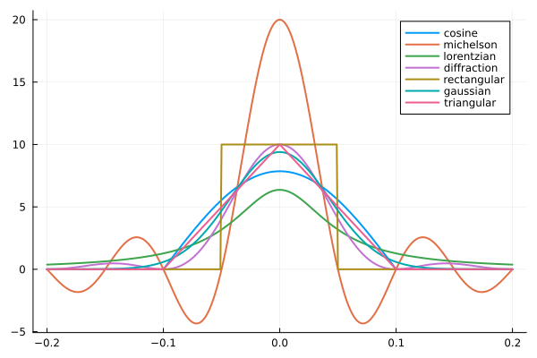

Functions for absorption spectrum calculation
The most important function of the module is the α function. Before using i, you have to initialise a database and use the fetch! function to retrieve line-by-line data.
The absorption coefficient
HITRAN.α — Functionα(tables::AbstractVector{String} [, profile=:hartmann_tran; kwargs...])Computes the absorption coefficient using line-by-line data stored in the database tables specified in tables. The lineshape can be optionally specified using the profile argument and one of the Symbol keys :hartmann_tran, :voigt, :sdvoigt, :lorentz, :gauss. If no keyword arguments are specified, they will be automatically chosen from the tables provided.
Keyword arguments
components: the components of the gas mixture for the calculation. Can be either a vector of tuples with(molecule_id, local_iso_id)or aDictwith the(molecule_id, local_iso_id)tuple as key and the abundance as value. If the vector of tuples is supplied the natural abundance will be used, so this makes no sense for gas mixtures other than isotopologues of the same molecule.intensity_threshold: the minimum line strength in $cm^{-1}/(\text{molecule} \cdot cm^{-2})$pressure: the environmental pressure in atmospheres (default: 1.0 atm)temperature: the environmental temperature in Kelvin (default: 296.0 K)ν: a vector or range of wavenumbers for which the absorption should be calculated. Useful for reusing the output ν vector for multiple calculations. If ν is supplied ν_range will be ignored.[]ν_range: a tuple of the form (νmin, νmax) where νmin/νmax is the minimum/maximum wavenumber for the absorption_spectrum respectively in $cm^{-1}$ν_step: the wavenumber step in $cm^{-1}$ (default: 0.01 $cm^{-1}$)ν_wing: absolute calculation width of a line in $cm^{-1}$ (default: 0 $cm^{-1}$)ν_wing_hw: relative calculation width of a line in multiples of a half-width (default: 50)diluent: aDictof the diluting substances, specified asSymbol, e.g.:airor:H2Ofor the key and the relative concentration as key (default:Dict(:self => 1.0)). See the example for details.
Environments
There are two default environments defined at the moment, which ease the calculation of atmospheric spectra.
Dry air
The first environment is dry air which can be accessed using default_environments[:dry_air]. The following composition is used [Picard2008]. Only HITRAN listed gases are used:
| Gas | Volume (ppmv) |
|---|---|
| $N_2$ | 780,848 |
| $O_2$ | 209,390 |
| $CO_2$ | 400 |
| $CH_4$ | 1.5 |
| $H_2$ | 0.5 |
| $N_2O$ | 0.3 |
| $CO$ | 0.2 |
Moist air
The second environment model is moist air which takes the relative humidity into the account. You can use the function moist_air to get a composition dictionary with the correct water concentration.
HITRAN.moist_air — Functionmoist_air(humidity [, pressure=c_p_ref, temp=c_T_ref])Returns a component list for moist air at relative humidity with the corresponding abundances of all components. The pressure (in atm) and the temperature (in K) have to be provided otherwise the HITRAN defaults will be used.
Please note that the underlying model for the saturation vapor pressure uses separate models for water and ice. It should provide reasonable values within the range of 200 to 400 K and between 0.6 to 1.1 atm.
Instrument functions
HITRAN.apply_instrument_function — Functionapply_instrument_function(ν, α[, instrument_function=:rectangular, instrument_wing=10.0, instrument_resolution=0.1])Applies an instrument function to the given input spectrum.
Arguments
ν: The wavenumber vector (NOTE: Uniform spacing is assumed but not checked!)α: The calculated absorption coefficient usingαinstrument_function(optional): A Symbol describing one of the instrument functions belowinstrument_wing(optional): The half-width of the range for calculating the instrument function in $cm^{-1}$instrument_resolution(optional): The full-width of the instrument resolution in $cm^{-1}$
Output
Returns a new vector with the spectrum influenced by the instrument function
Instrument functions
The following instrument functions $I(x, Δ)$ are supported. Here xis the coordinate for evaluating the function, whose range is given by instrument_wing. Δ is the resolution parameter instrument_resolution. Use the stated symbol as value for the argument instrument_function.
| Symbol | Equation | Description |
|---|---|---|
:rectangular | $\begin{cases} \frac{1}{Δ} & \lvert x \rvert \leq \frac{Δ}{2} \\ 0 & \lvert x \rvert > \frac{Δ}{2} \end{cases}$ | A rectangular instrument function |
:triangular | $\begin{cases} \frac{1}{Δ} (1 - \frac{\lvert x \rvert}{Δ}) & \lvert x \rvert \leq Δ \\ 0 & \lvert x \rvert > Δ \end{cases}$ | A triangular instrument function |
:gaussian | $\frac{2}{Δ} \sqrt{\frac{\mathrm{ln}2}{\pi}} \mathrm{exp} \left (- \mathrm{ln}2 \left ( \frac{2x}{Δ}\right)^2 \right )$ | A Gaussian instrument function (e.g. a broadband source) |
:lorentzian | $\frac{Δ}{2\pi} \frac{1}{x^2+\left(\frac{Δ}{2}\right)^2}$ | A Lorentzian instrument function (e.g. a single frequency laser) |
:cosine | $\begin{cases} \frac{\pi}{4Δ} \cos \left ( \frac {\pi \lvert x \rvert}{2Δ} \right ) & \lvert x \rvert \leq Δ \\ 0 & \lvert x \rvert > Δ \end{cases}$ | A cosine instrument function |
:diffraction | $\frac{1}{Δ} \mathrm{sinc}^2 \left( \frac{\pi x}{Δ} \right)$ | A diffraction (sinc-type) instrument function |
:michelson | $\frac{2}{Δ} \mathrm{sinc} \left( \frac{2 \pi x}{Δ} \right)$ | A Michelson interferometer-type instrument function (e.g. FTIR) |
Overview of instrument functions
The following graph shows all supported instrument functions for a resolution of $0.1 cm^{-1}$.
/home/runner/work/HITRAN.jl/HITRAN.jl/docs/build/plot.svg
Convenience functions
The following three functions are provided as a convenience to convert the absorption coefficient to either an absorption spectrum, transmittance spectrum or an optical depth.
HITRAN.absorption_spectrum — Functionabsorption_spectrum(α, len)Computes the absorption spectrum for the given length len in centimeters. The vector α should be calculated using the corresponding α function.
HITRAN.transmittance_spectrum — Functiontransmittance_spectrum(α, len)Computes the transmittance spectrum for the given length len in centimeters. The vector α should be calculated using the corresponding α function.
HITRAN.optical_depth — Functionoptical_depth(α, len)Computes the optical depth for the given length len in centimeters. The vector α should be calculated using the corresponding α function.
HITRAN.frequency_to_wavenumber — Functionfrequency_to_wavenumber(x)Converts a given frequency in Hz to wavenumber in $cm^{-1}$
HITRAN.wavelength_to_wavenumber — Functionwavelength_to_wavenumber(x)Converts a given wavelength in m to wavenumber in $cm^{-1}$
- Picard2008A., Picard, R.S., Davis, M., Gläser and K., Fujii (2008), Revised formula for the density of moist air (CIPM-2007), Metrologia 45, 149–155 (2008).